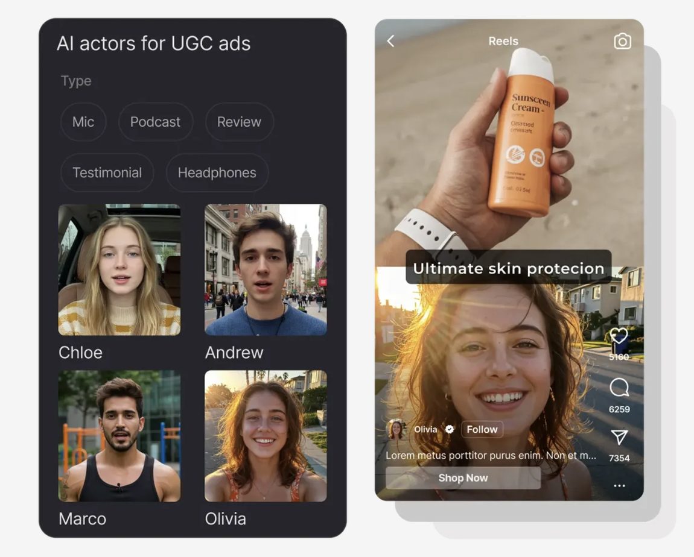

InVideo is an impressive AI video platform with genuinely ambitious capabilities, AI agents that remember project context, Veo 3.1 and Kling 3 model access, multiplayer collaboration, and filmmaking tools that rival desktop editors. For creative teams building films, branded content, or microdrama series, it's a serious choice. But for e-commerce performance marketers who need UGC ad clips to test on Meta and TikTok, InVideo is the wrong tool for the job, too complex, too broad, and the UGC actor library (4 avatars on Plus) is too limited to drive real testing velocity. These four alternatives are built specifically for UGC ad creative.
InVideo's UGC Ads feature exists, but the platform's architecture is designed for a different use case. Four mismatches consistently drive ad-focused teams toward dedicated alternatives:

UGCDrop is the strongest InVideo alternative for e-commerce performance marketers who need UGC ad content rather than general video production. Where InVideo is a broad filmmaking platform with UGC as a secondary feature, UGCDrop is purpose-built for exactly one thing: giving ad teams instant access to real human UGC clips for creative testing and ad production. At $28/month for 30 real human downloads ($0.93/clip), it's more expensive than InVideo Plus, but delivers real human faces, genuine emotional reactions, and authentic body language that InVideo's 4-avatar AI actor library can't replicate.
The library covers 10,000+ pre-filmed clips searchable by emotion, age, gender, clothing, and setting, giving performance teams the filtering depth they need to match creative direction to audience segment. No script writing, no storyboarding, no timeline editing. Just download the clips you need and cut them into ads. For teams spending time learning InVideo's filmmaking interface to produce something that's still AI-generated, UGCDrop is a faster and more authentic path to the same output.
Creatify is the strongest InVideo alternative for teams that want to stay in the AI-generated UGC category but need a tool actually designed for ad creative, not filmmaking. Where InVideo's UGC Ads is one feature among many in a broad platform, Creatify's entire product is built around generating video ads: 300–1,500 AI actors, URL-to-video workflows, batch mode for generating dozens of variants, a competitor ad tracker covering 10M+ Meta ads, and a built-in ad launcher for Meta, TikTok, and AppLovin.
At $39/month Starter (300 AI actors, 100 credits) versus InVideo Plus ($17/month, 4 AI actors, 75 credits), Creatify is more expensive, but the product is entirely focused on the use case. For ad-focused teams that tried InVideo's UGC feature and found it too limited or too complex, Creatify is the natural upgrade within the AI avatar category.
Billo is the strongest InVideo alternative when you need real human creators filming your actual product, not AI actors from InVideo or UGCDrop's pre-filmed library. Trusted by 22,000+ brands, Billo uses performance data from 326,000+ ads and $500M in attributed purchase value to generate data-backed briefs, match brands with performance-proven creators, and produce content with Creator Partnership Ads built in. For brands that want both the authenticity of real humans and the scale of a managed platform, Billo is a tier above what InVideo's UGC feature or any AI-avatar tool delivers.
At $99/video and a 7–12 day turnaround, Billo is significantly more expensive per piece of content than InVideo. But the comparison isn't really apples-to-apples: InVideo produces AI-generated content in minutes, while Billo produces real human content with product placement and data-optimized creative direction. For the campaigns where those differences matter to conversion, Billo is the right tool.
JoinBrands is the strongest InVideo alternative for brands that want access to real human creators at volume without the managed-service cost of Billo. With 4M+ creators across TikTok, Instagram, YouTube, and Amazon, JoinBrands gives brands the ability to run unlimited campaigns across content types, UGC video, TikTok Shop, product seeding, affiliate programs, from a single platform. UGC videos start at $25 per creator (plus 8–15% platform fee), significantly cheaper than Billo per video and far more authentic than InVideo's AI actors.
The trade-off versus InVideo is management overhead: JoinBrands requires briefing creators, reviewing applications, managing communication, and tracking revisions. For brands currently using InVideo because it removes creator management complexity, JoinBrands brings that complexity back, but delivers real human content that converts more reliably in trust-sensitive categories.
| Platform | Entry Cost | Cost Per Video | Content Type | Ad-Focused |
|---|---|---|---|---|
| UGCDrop | $28/month | $0.93/clip | Real humans | Yes |
| Creatify | $39/month | Variable credits | AI avatars | Yes |
| Billo | Demo required | $99/video | Real humans | Yes |
| JoinBrands | $99/mo + fee | $25+ + 8–15% | Real humans | Partial |
| InVideo | $17/month | Variable credits | AI avatars | No |

No filmmaking complexity, no 4-avatar limits, no AI-generated faces. 10,000+ real human clips, instant access, filtered by emotion and audience, built for performance marketers, not filmmakers.
Start Sourcing Free